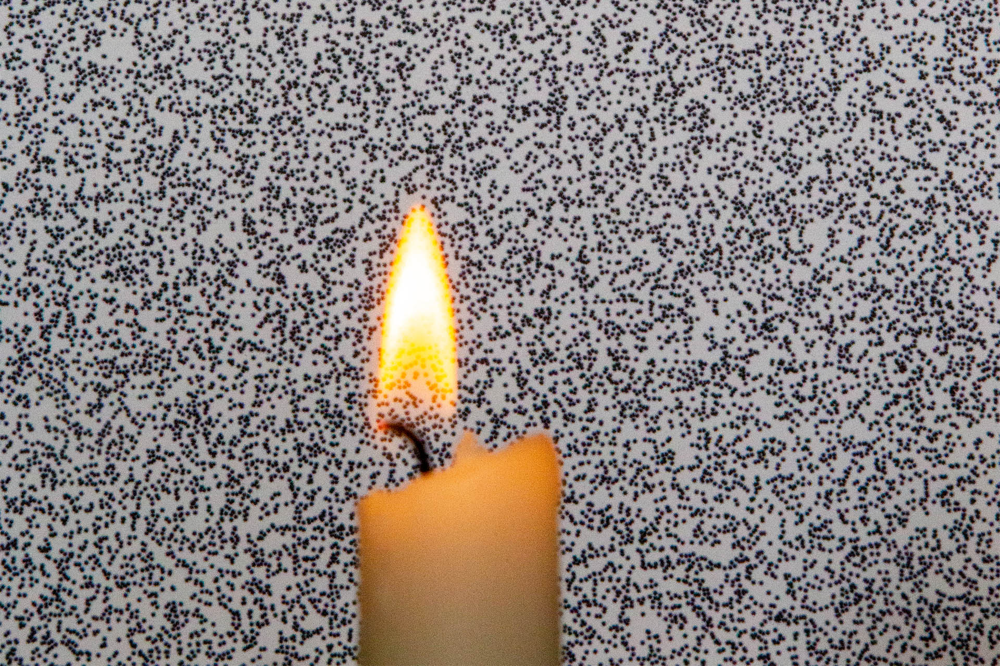

I asked a lot of questions growing up. How do planes fly? What is sound? Why do hurricanes form? Why doesn't water fall out of my straw when I hold one end? Each time, the answer was differences in air pressure. Intuitively, this never made much sense, even as I went off to college. I couldn't see the differences in air pressure that were apparently all around, so I couldn't wrap my head around how they worked. This made me excited when I first came across schlieren photography, a photographic technique invented in the mid-1800's that enables you to visualize these density differences.
Schlieren photography is based on Snell's law, which describes how light bends when it moves between mediums of different densities. This concept is covered in depth in Project #6.
Illustration of how light changes direction when changing speeds. This relationship is given by Snell's law.
Given that pressure is a correlary of density, light will bend as it passes through different pressures. If you can somehow observe this bending, then you can see pressure changes. This is the core of classical schlieren imaging. Unfortunately, this technique requires a complex and precisely tuned setup of large parabolic mirrors.
There is a derivative of schlieren imaging called background-oriented schlieren. This technique is much more feasible to set up. In this project, I used background-oriented schlieren to visualize the airflow and density differences around a candle.
In background-oriented schlieren, a textured background is placed behind the subject and is imaged. The camera and background are stationary, so if there were no disturbance, the background would appear identical from frame to frame. However, if a density difference is introduced, the light traveling from the background to the sensor will be bent in the areas with a pressure change. In the image, it will appear that the background has shifted/warped in the areas of a density disturbance between frames. The sequences of images can be processed to find the direction and magnitude of background movement. This motion will reveal the density differences.
For my test, I created a pattern of random dots on a sheet of paper as a background. The contrast of the dots makes it easy to see where the background shifted. To visualize density differences in air, I held a flame between the camera and the background.
The subject and background as seen from the camera.
I took a 60 fps video of a moving a flame in front of the background. I extracted the frames as images, and analyzed them with PIVlab. PIVlab is a fluid dynamics tool meant for tracking the motions of particles (particle image velocimetry), and I can't recommend it more highly. Though it requires MATLAB to use, the quality of a free software package was amazing.
PIV software is well-suited for my purposes as the background appears as particles, and I need to find the relative motion between frames. I removed the region where my lighter and hand were captured as that interfered with the analysis.
When looking at sequential frames from the setup, you are able to observe the background shift just slightly in regions with hot air. This movement is then captured by PIVlab, and motion vectors are plotted on the image.
Apparent movement in the background that is caused by density differences between frames. The measured motion vector field is plotted on top of the second frame.
I processed 475 frames from the source a video to produce a video of the changes in density through time. I visualized the density changes by both plotting the background motion vectors on top of the original video, and also mapping the magnitude of the vector to a colormap.
Left: Vector field of background motion overlaid on video of flame. Areas of motion indicate a density change between frames. Note: the red region is excluded from the analysis.
Right: Plotting the magnitude of each background motion vector. Here, regions of density change are isolated and highlighted.
I'm quite happy with the outputs. I originaly worked on a project with background-oriented schlieren in 2015. I've been so interested in the concept ever since that time, but haven't been able to revisit it. I think the concept of density visualization is very powerful, and I would love to stretch its sensitivity.
The tracking quality was quite impressive. Though it took some effort to optimize the environment for peak tracking performance, the fact that the network can estimate 3D pose with such fidelity from only a monocular camera is very impressive.